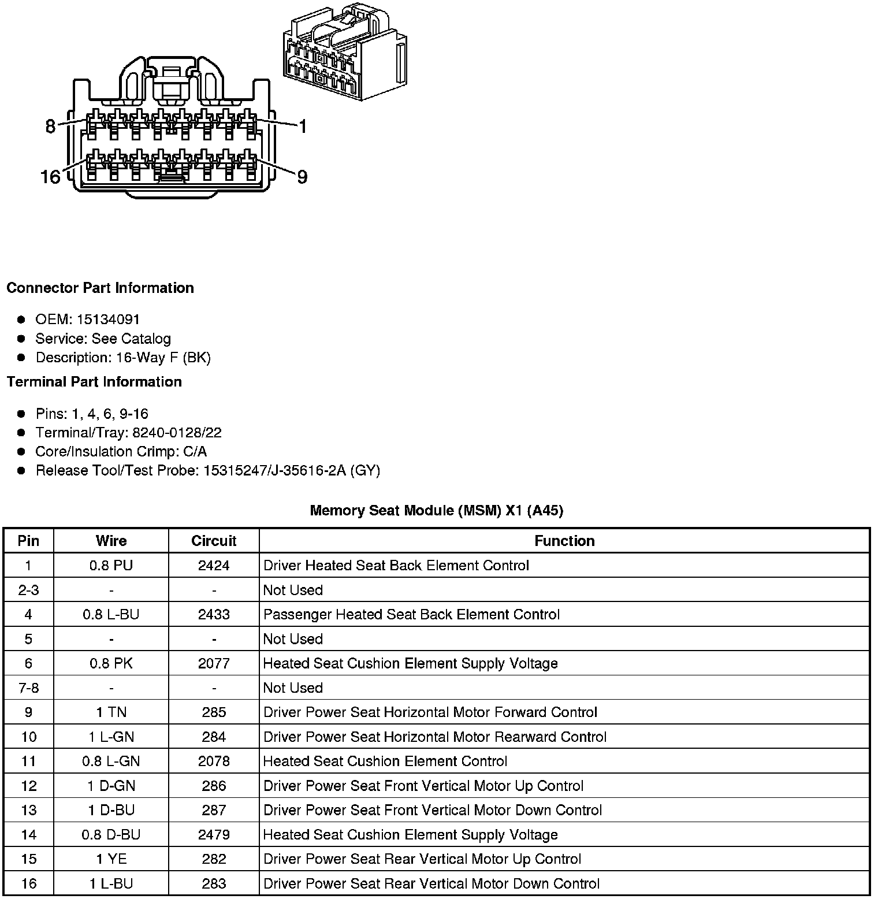
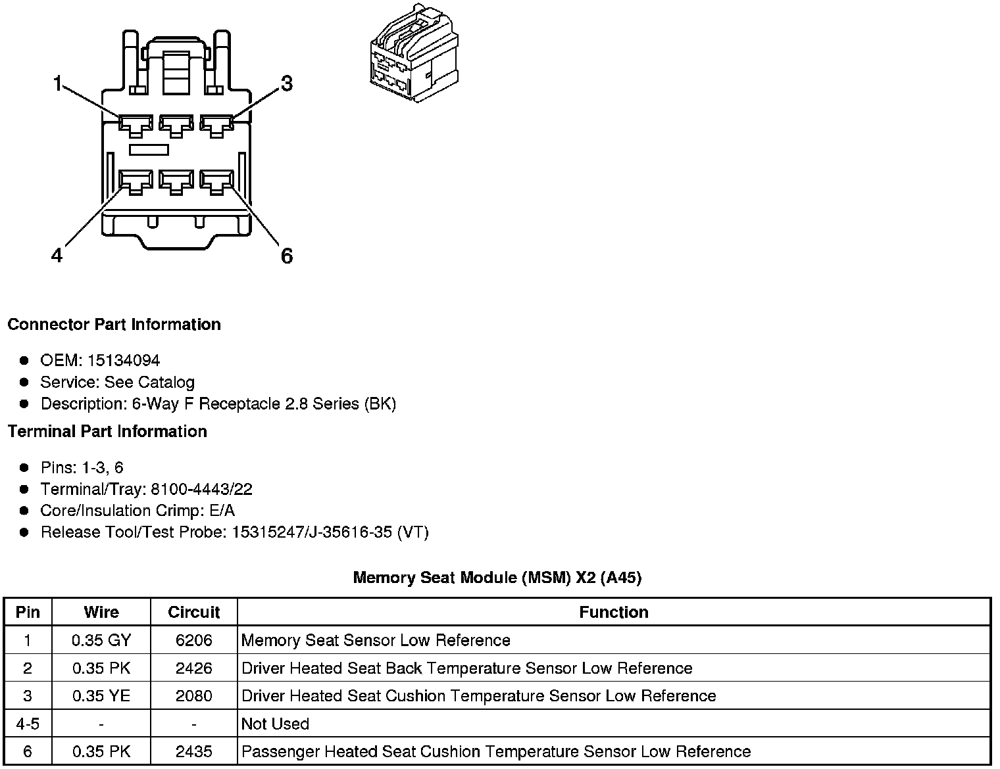
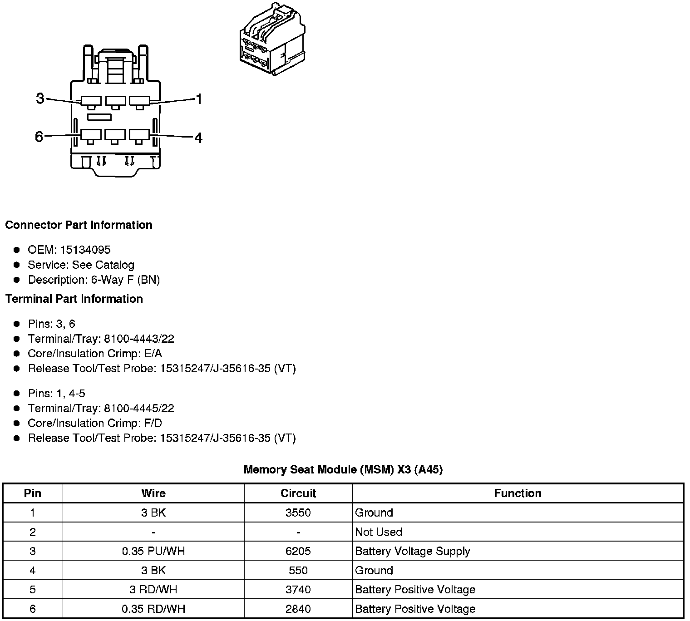
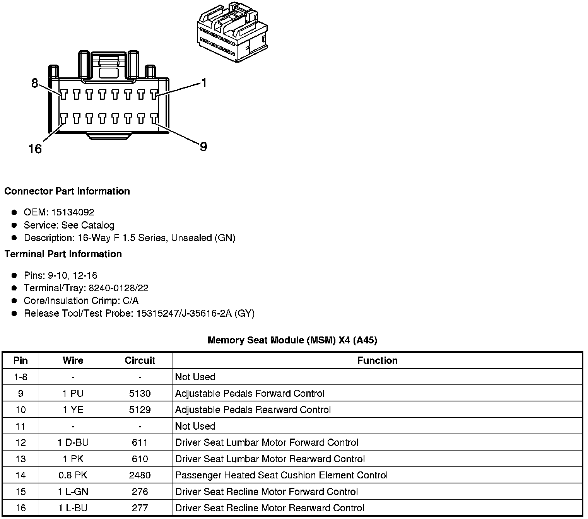
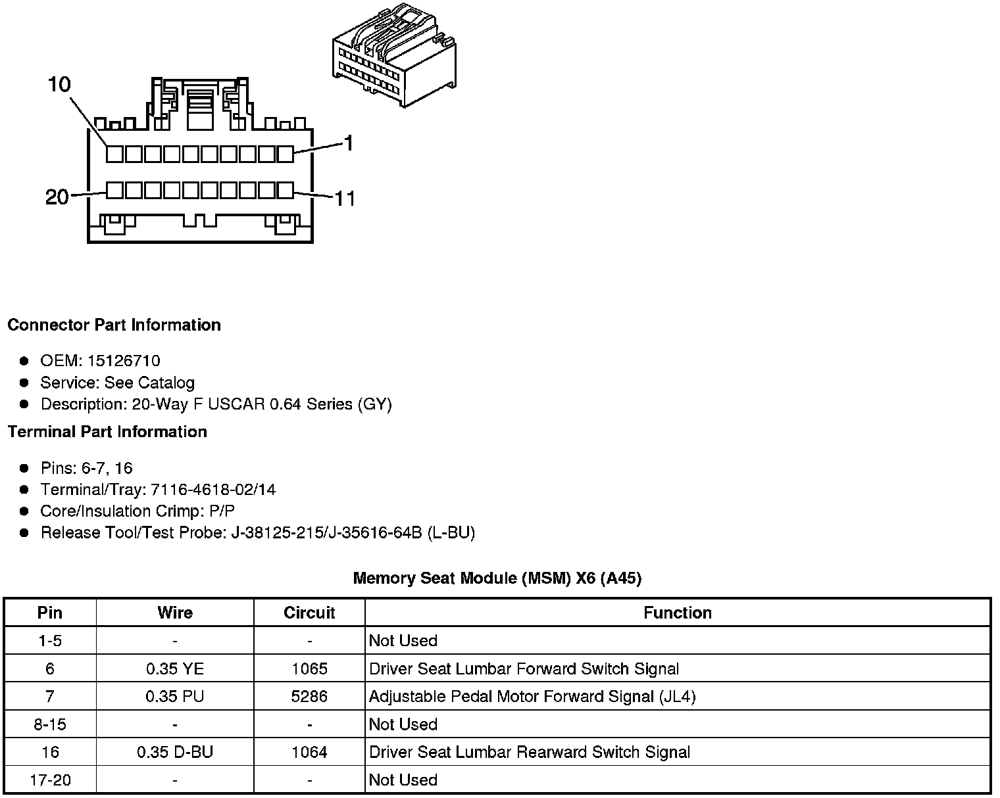
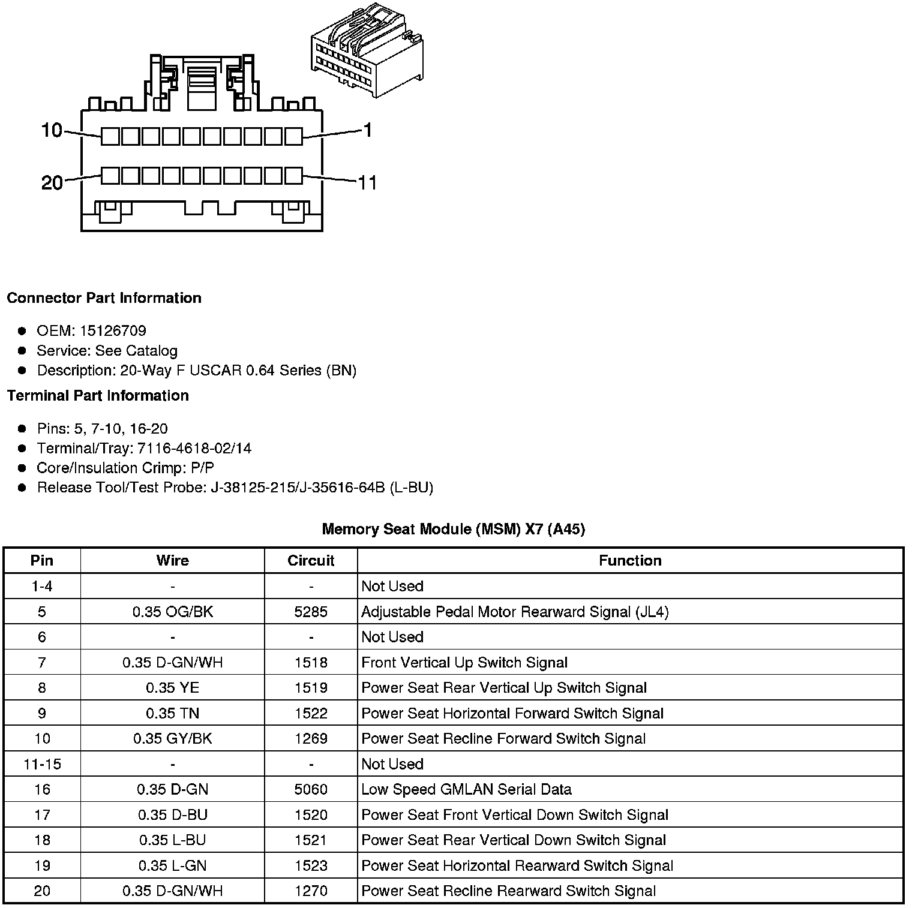
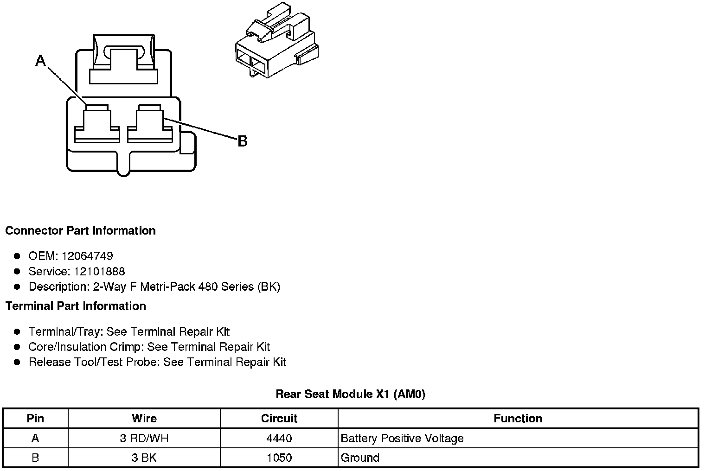
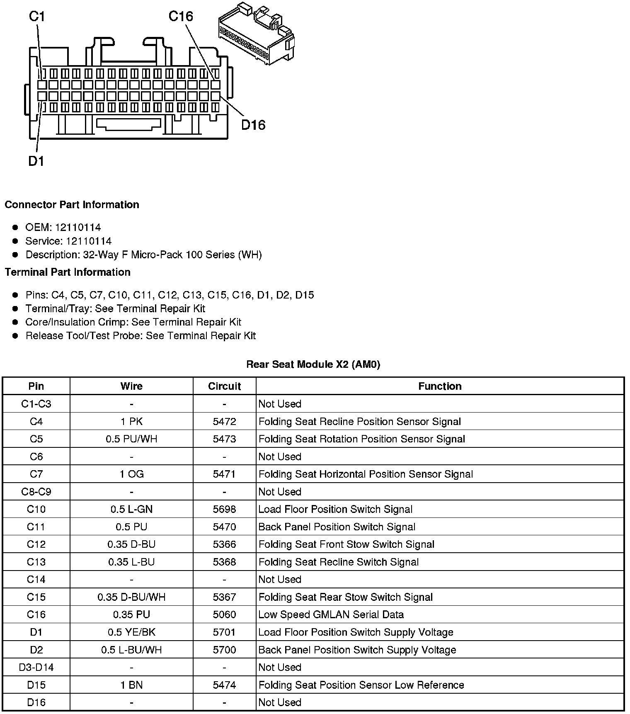
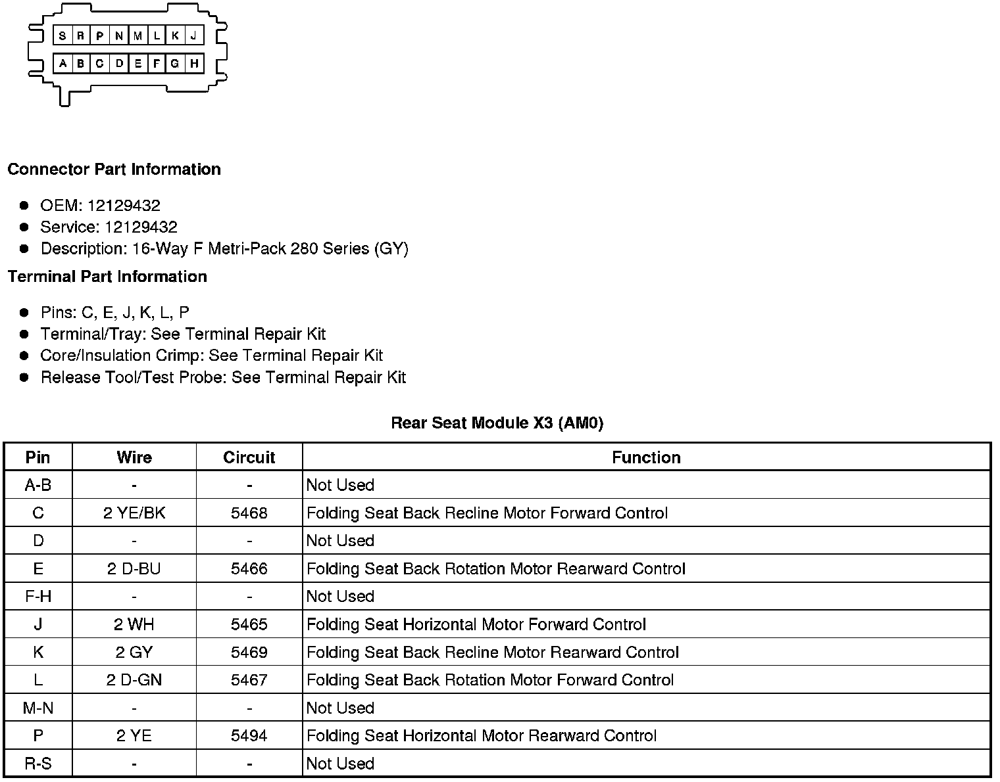

Power Seat Control Module: Diagrams
Component Connector End Views
Memory Seat Module (MSM) X1 (A45)

Memory Seat Module (MSM) X2 (A45)

Memory Seat Module (MSM) X3 (A45)

Memory Seat Module (MSM) X4 (A45)

Memory Seat Module (MSM) X5 (A45)

Memory Seat Module (MSM) X6 (A45)

Memory Seat Module (MSM) X7 (A45)

Component Connector End Views
Rear Seat Module X1 (AM0)

Rear Seat Module X2 (AM0)

Rear Seat Module X3 (AM0)
